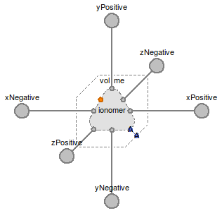

Table of Contents
- User's Guide
- BCs**
- Sensors**
- Assemblies**
- Regions**
- Subregions
- Connectors
- Characteristics
- Units
- Quantities
- BaseClasses
- **Please check back soon or contact kdavies4 at gmail.com.
Download
- Latest: FCSys-2.0.zip (**Check back soon.)

Licensed by the Georgia Tech Research Corporation under the Modelica License 2
Copyright 2007–2012, Georgia Tech Research Corporation.
This Modelica package is free software and the use is completely at your own risk; it can be redistributed and/or modified under the terms of the Modelica License 2. For license conditions (including the disclaimer of warranty) see FCSys.UsersGuide.ModelicaLicense2 or visit http://www.modelica.org/licenses/ModelicaLicense2.
Extends from Modelica.Icons.Package (Icon for standard packages).
| Name | Description |
|---|---|
| Examples and tests | |
| Subregion with all phases included | |
| Subregion with all phases except graphite | |
| Subregion with all phases except ionomer | |
| Phases or mixtures of species | |
| Models for single-species storage, transport, and exchange of material, linear momentum, and energy | |
| Phase boundary (adapter between Amagat and Dalton mixtures) | |
| Model for a chemical/electrochemical reaction | |
| Model to establish a fixed volume for phases | |
| Base classes (not for direct use) |
 FCSys.Subregions.Subregion
FCSys.Subregions.Subregion

Notes:
inclReact parameter may be set to
false
to eliminate unnecessary equations.For more information, see the PartialSubregion model.
Extends from BaseClasses.PartialSubregion (Partial subregion model for multi-dimensional and multi-species storage, transport, and exchange).
| Type | Name | Default | Description |
|---|---|---|---|
| Geometry | |||
| Length | L[Axis] | Length (L) [l] | |
| Phases | |||
| Gas | gas | Gas | |
| Graphite | graphite | Graphite | |
| Ionomer | ionomer | Ionomer | |
| Assumptions | |||
| Boolean | inclReact | true | Include reaction(s), as appropriate |
| Axes with velocity included | |||
| Boolean | inclVelX | true | X |
| Boolean | inclVelY | false | Y |
| Boolean | inclVelZ | false | Z |
| Axes with faces included | |||
| Boolean | inclXFaces | true | X |
| Boolean | inclYFaces | true | Y |
| Boolean | inclZFaces | true | Z |
| Type | Name | Description |
|---|---|---|
| FaceBus | xNegative | Negative face along the x axis |
| FaceBus | xPositive | Positive face along the x axis |
| FaceBus | yNegative | Negative face along the y axis |
| FaceBus | yPositive | Positive face along the y axis |
| FaceBus | zNegative | Negative face along the z axis |
| FaceBus | zPositive | Positive face along the z axis |
model Subregion "Subregion with all phases included" parameter Boolean inclReact=true "Include reaction(s), as appropriate"; // Note: This is listed above the extends clause so that it is listed // first in the parameter dialog. extends BaseClasses.PartialSubregion;Phases.Gas gas(inclH2O=true, final inclVel={inclVelX,inclVelY,inclVelZ}) "Gas"; Phases.Graphite graphite(final inclVel={inclVelX,inclVelY,inclVelZ}) "Graphite"; Phases.Ionomer ionomer(final inclVel={inclVelX,inclVelY,inclVelZ}) "Ionomer"; /* Phases.Liquid liquid(final inclVel={inclVelX, inclVelY,inclVelZ}) "Liquid" annotation ( Dialog(group="Phases"), Placement(transformation(extent={{-10,-10},{10,10}}))); */FCSys.Subregions.Reaction HOR(final n_vel=n_vel, n_spec=3) if inclReact and ( graphite.'incle-' and ionomer.'inclH+' and gas.inclH2 and not (gas.inclO2 and gas.inclH2O)) "Hydrogen oxidation reaction"; FCSys.Subregions.Reaction ORR(final n_vel=n_vel, n_spec=4) if inclReact and ( graphite.'incle-' and ionomer.'inclH+' and gas.inclO2 and gas.inclH2O and not gas.inclH2) "Oxygen reduction reaction"; protected Connectors.ChemicalBusInternal chemical "Internal connector to route electrochemical interactions"; equation // Chemical interactionsconnect(HOR.chemical[1], chemical.'H+'); connect(HOR.chemical[2], chemical.'e-'); connect(HOR.chemical[3], chemical.H2); connect(ORR.chemical[1], chemical.'e-'); connect(ORR.chemical[2], chemical.'H+'); connect(ORR.chemical[3], chemical.O2); connect(ORR.chemical[4], chemical.H2O); // Gasconnect(gas.chemical, chemical); connect(gas.inert, volume.inert); connect(gas.xNegative, xNegative.gas); connect(gas.xPositive, xPositive.gas); connect(gas.yNegative, yNegative.gas); connect(gas.yPositive, yPositive.gas); connect(gas.zNegative, zNegative.gas); connect(gas.zPositive, zPositive.gas); // Graphiteconnect(graphite.chemical, chemical); connect(graphite.inert, volume.inert); connect(graphite.xNegative, xNegative.graphite); connect(graphite.xPositive, xPositive.graphite); connect(graphite.yNegative, yNegative.graphite); connect(graphite.yPositive, yPositive.graphite); connect(graphite.zNegative, zNegative.graphite); connect(graphite.zPositive, zPositive.graphite); // Ionomerconnect(ionomer.chemical, chemical); connect(ionomer.inert, volume.inert); connect(ionomer.xNegative, xNegative.ionomer); connect(ionomer.xPositive, xPositive.ionomer); connect(ionomer.yNegative, yNegative.ionomer); connect(ionomer.yPositive, yPositive.ionomer); connect(ionomer.zNegative, zNegative.ionomer); connect(ionomer.zPositive, zPositive.ionomer); /* // Liquid connect(liquid.inert, volume.interaction) annotation (Line( points={{6.10623e-16,6.10623e-16},{5.55112e-16,5.55112e-16}}, color={0,180,0}, smooth=Smooth.None, thickness=0.5)); connect(liquid.xNegative, xNegative.liquid) annotation (Line( points={{-10,6.10623e-16},{-10,1.16573e-15},{-25,1.16573e-15},{-25,5.55112e-16}, {-40,5.55112e-16}}, color={127,127,127}, pattern=LinePattern.None, thickness=0.5, smooth=Smooth.None)); connect(liquid.xPositive, xPositive.liquid) annotation (Line( points={{10,6.10623e-16},{10,5.55112e-16},{40,5.55112e-16}}, color={127,127,127}, pattern=LinePattern.None, thickness=0.5, smooth=Smooth.None)); connect(liquid.yNegative, yNegative.liquid) annotation (Line( points={{6.10623e-16,-10},{6.10623e-16,-40},{5.55112e-16,-40}}, color={127,127,127}, pattern=LinePattern.None, thickness=0.5, smooth=Smooth.None)); connect(liquid.yPositive, yPositive.liquid) annotation (Line( points={{6.10623e-16,10},{-4.87687e-22,10},{-4.87687e-22,40},{5.55112e-16, 40}}, color={127,127,127}, pattern=LinePattern.None, thickness=0.5, smooth=Smooth.None)); connect(liquid.zNegative, zNegative.liquid) annotation (Line( points={{5,5},{20,20}}, color={127,127,127}, pattern=LinePattern.None, thickness=0.5, smooth=Smooth.None)); connect(liquid.zPositive, zPositive.liquid) annotation (Line( points={{-5,-5},{-20,-20}}, color={127,127,127}, pattern=LinePattern.None, thickness=0.5, smooth=Smooth.None)); */end Subregion;
FCSys.Subregions.SubregionNoGraphite
Notes:
inclReact parameter may be set to
false
to eliminate unnecessary equations.For more information, see the PartialSubregion model.
Extends from BaseClasses.PartialSubregion (Partial subregion model for multi-dimensional and multi-species storage, transport, and exchange).
| Type | Name | Default | Description |
|---|---|---|---|
| Geometry | |||
| Length | L[Axis] | Length (L) [l] | |
| Phases | |||
| Gas | gas | Gas | |
| Ionomer | ionomer | Ionomer | |
| Assumptions | |||
| Boolean | inclReact | false | Include reaction(s), as appropriate |
| Axes with velocity included | |||
| Boolean | inclVelX | true | X |
| Boolean | inclVelY | false | Y |
| Boolean | inclVelZ | false | Z |
| Axes with faces included | |||
| Boolean | inclXFaces | true | X |
| Boolean | inclYFaces | true | Y |
| Boolean | inclZFaces | true | Z |
| Type | Name | Description |
|---|---|---|
| FaceBus | xNegative | Negative face along the x axis |
| FaceBus | xPositive | Positive face along the x axis |
| FaceBus | yNegative | Negative face along the y axis |
| FaceBus | yPositive | Positive face along the y axis |
| FaceBus | zNegative | Negative face along the z axis |
| FaceBus | zPositive | Positive face along the z axis |
model SubregionNoGraphite "Subregion with all phases except graphite" parameter Boolean inclReact=false "Include reaction(s), as appropriate"; // Note: This is listed above the extension clause so that it is listed // first in the parameter dialog. extends BaseClasses.PartialSubregion;Phases.Gas gas( inclH2O=true, inclReact=inclReact, final inclVel={inclVelX,inclVelY,inclVelZ}) "Gas"; Phases.Ionomer ionomer(final inclVel={inclVelX,inclVelY,inclVelZ}) "Ionomer"; equation // Gasconnect(gas.inert, volume.inert); connect(gas.xNegative, xNegative.gas); connect(gas.xPositive, xPositive.gas); connect(gas.yNegative, yNegative.gas); connect(gas.yPositive, yPositive.gas); connect(gas.zNegative, zNegative.gas); connect(gas.zPositive, zPositive.gas); // Ionomerconnect(ionomer.inert, volume.inert); connect(ionomer.xNegative, xNegative.ionomer); connect(ionomer.xPositive, xPositive.ionomer); connect(ionomer.yNegative, yNegative.ionomer); connect(ionomer.yPositive, yPositive.ionomer); connect(ionomer.zNegative, zNegative.ionomer); connect(ionomer.zPositive, zPositive.ionomer); end SubregionNoGraphite;
FCSys.Subregions.SubregionNoIonomer

Notes:
inclReact parameter may be set to
false
to eliminate unnecessary equations.For more information, see the PartialSubregion model.
Extends from BaseClasses.PartialSubregion (Partial subregion model for multi-dimensional and multi-species storage, transport, and exchange).
| Type | Name | Default | Description |
|---|---|---|---|
| Geometry | |||
| Length | L[Axis] | Length (L) [l] | |
| Phases | |||
| Gas | gas | Gas | |
| Graphite | graphite | Graphite | |
| Assumptions | |||
| Boolean | inclReact | false | Include reaction(s), as appropriate |
| Axes with velocity included | |||
| Boolean | inclVelX | true | X |
| Boolean | inclVelY | false | Y |
| Boolean | inclVelZ | false | Z |
| Axes with faces included | |||
| Boolean | inclXFaces | true | X |
| Boolean | inclYFaces | true | Y |
| Boolean | inclZFaces | true | Z |
| Type | Name | Description |
|---|---|---|
| FaceBus | xNegative | Negative face along the x axis |
| FaceBus | xPositive | Positive face along the x axis |
| FaceBus | yNegative | Negative face along the y axis |
| FaceBus | yPositive | Positive face along the y axis |
| FaceBus | zNegative | Negative face along the z axis |
| FaceBus | zPositive | Positive face along the z axis |
model SubregionNoIonomer "Subregion with all phases except ionomer" parameter Boolean inclReact=false "Include reaction(s), as appropriate"; // Note: This is listed above the extends clause so that it is listed // first in the parameter dialog. extends BaseClasses.PartialSubregion;Phases.Gas gas( inclH2O=true, inclReact=inclReact, final inclVel={inclVelX,inclVelY,inclVelZ}) "Gas"; Phases.Graphite graphite(final inclVel={inclVelX,inclVelY,inclVelZ}) "Graphite"; equation // Gasconnect(gas.inert, volume.inert); connect(gas.xNegative, xNegative.gas); connect(gas.xPositive, xPositive.gas); connect(gas.yNegative, yNegative.gas); connect(gas.yPositive, yPositive.gas); connect(gas.zNegative, zNegative.gas); connect(gas.zPositive, zPositive.gas); // Graphiteconnect(graphite.inert, volume.inert); connect(graphite.xNegative, xNegative.graphite); connect(graphite.xPositive, xPositive.graphite); connect(graphite.yNegative, yNegative.graphite); connect(graphite.yPositive, yPositive.graphite); connect(graphite.zNegative, zNegative.graphite); connect(graphite.zPositive, zPositive.graphite); end SubregionNoIonomer;
 FCSys.Subregions.PhaseBoundary
FCSys.Subregions.PhaseBoundary

This model is essentially an adapter between the InertDalton and InertAmagat connectors. Inside a phase, Dalton's law is applied. Outside, Amagat's law is used.
See also the documentation in the Connectors package.
| Type | Name | Default | Description |
|---|---|---|---|
| Geometry | |||
| Integer | n_vel | 1 | Number of components of velocity (nvel) |
| Type | Name | Description |
|---|---|---|
| InertAmagat | inertA | Connector for volume, linear momentum, and entropy—with Amagat's law |
| InertDalton | inertD | Connector for volume, linear momentum, and entropy—with Dalton's law |
model PhaseBoundary
"Phase boundary (adapter between Amagat and Dalton mixtures)"
//extends FCSys.BaseClasses.Icons.Names.Top6;
parameter Integer n_vel(
final min=0,
final max=3) = 1
"Number of components of velocity (nvel)";
FCSys.Connectors.InertAmagat inertA(final n_vel=n_vel)
"Connector for volume, linear momentum, and entropy—with Amagat's law";
Connectors.InertDalton inertD(final n_vel=n_vel)
"Connector for volume, linear momentum, and entropy—with Dalton's law";
equation
// Equal intensive properties
inertA.phi = inertD.phi;
inertA.T = inertD.T;
// Static balances
0 = inertA.p + inertD.p "Pressure";
0 = inertA.V + inertD.V "Volume";
// Rate balances (without storage or generation)
zeros(n_vel) = inertA.mPhidot + inertD.mPhidot "Linear momentum";
0 = inertA.Qdot + inertD.Qdot "Energy";
end PhaseBoundary;
 FCSys.Subregions.Reaction
FCSys.Subregions.Reaction

The size of the chemical connector is automatically increased each time a connection is made. At least two species must be connected. The stoichiometry is determined automatically from the chemical formulas of the connected species. No intermediate species are considered. Each reaction must be completely and uniquely defined by the connected species. Otherwise an error message is given. If you suspect a bug in the library, please report it using the contact information.
Linear momentum and energy are advected using the semiLinear operator.
The rate of advection of linear momentum is the
product of the velocity of the source and the rate of mass
(m φ Ṅ). The rate of thermal advection is the
product of the massic enthalpy of the source and the rate of mass
(m h̄ Ṅ). If there multiple sources, then
their contributions are additive. If there are multiple sinks, then
the flow is split on a mass basis.
At uniform temperature, the stoichiometrically weighted sum of the chemical potentials zero. The Species model specifies that the chemical potential is the Gibbs potential (g = h - sT). Therefore, assuming uniform temperature, the rate of advection of enthalpy (Ḣ) from reactants to products (or vice versa) is also temperature times the rate of advection of entropy (TṠ).
For material, this model is essentially the opposite of a standard single-species connection. The stoichiometric sum of the efforts (Σ νi μi) is zero, which is analogous to Kirchhoff's Current Law. The flow rates divided by the stoichiometric coefficients (Ṅi /νi) are equal—analogous to Kirchhoff's Voltage Law.
Linear momentum and enthalpy are advected using the semiLinear() operator. There is no diffusion;
it is included in the inert connections among species
(see the Species model).
Assumptions:
| Type | Name | Default | Description |
|---|---|---|---|
| Integer | n_vel | 1 | Number of components of velocity (nvel) |
| Type | Name | Description |
|---|---|---|
| ChemicalInput | chemical[n_spec] | Connector for chemical species |
model Reaction "Model for a chemical/electrochemical reaction"
//extends FCSys.BaseClasses.Icons.Names.Top2;
parameter Integer n_spec(min=2) = 0 "Number of chemical species";
// Note The minimum is 2 for a meaningful reaction, but the default
// must be 0 to use connectorSizing.
parameter Integer n_vel=1
"Number of components of velocity (nvel)";
Real nu[n_spec]=Chemistry.stoich(chemical.formula)
"Stoichiometric coefficients";
// Note 1: As of Modelica 3.2 and Dymola 7.4, nu can't be a parameter or
// constant even though it isn't time-varying. The strings that represent
// the chemical formulas can't be passed through the connectors as
// parameters or constants. However, the translator should recognize that
// these equations are static.
// Note 2: This is a Real variable (rather than Integer) to avoid the
// following warning in Dymola 7.4:
// "Cannot differentiate discrete or record variable:
// [...].nu[...]
// with respect to time."
Q.Current Xidot(nominal=1*U.A) "Reaction rate";
Connectors.ChemicalInput chemical[n_spec](each final n_vel=n_vel)
"Connector for chemical species";
protected
Q.Velocity phi[n_vel](each nominal=1*U.cm/U.s,each start=0) "Velocity";
Q.Velocity2 hbar(nominal=1*U.V*U.mol/U.g, start=0) "Massic enthalpy";
equation
// Chemical equilibrium
0 = nu*chemical.muPerT;
// Conservation (without storage)
nu[1:n_spec]*Xidot = chemical.Ndot "Material";
zeros(n_vel) = sum(chemical[i].mPhidot for i in 1:n_spec) "Linear momentum";
0 = sum(chemical.Hdot) "Energy";
// Ideal mixing/upstream discretization
// Chemical species
for i in 1:n_spec loop
chemical[i].mPhidot = semiLinear(
chemical[i].m*chemical[i].Ndot,
chemical[i].phi,
phi) "Linear momentum";
chemical[i].Hdot = semiLinear(
chemical[i].m*chemical[i].Ndot,
chemical[i].hbar,
hbar) "Energy";
end for;
// TODO: Use stream connectors once they are better supported (some
// errors occurred in Dymola 7.4).
// Note: This model is marked as structurally incomplete. It must have
// zero species by default (for automatic connector sizing), but at least
// one species is mathematically required (two for a meaningful reaction).
end Reaction;
 FCSys.Subregions.Volume
FCSys.Subregions.Volume

This model uses a InertAmagat connector that imposes additivity of volume. In order to convert to additivity of pressure, use the PhaseBoundary model.
See also the documentation in the Connectors package.
| Type | Name | Default | Description |
|---|---|---|---|
| Volume | V | Volume [l3] | |
| Integer | n_vel | 1 | Number of components of velocity (nvel) |
| Type | Name | Description |
|---|---|---|
| InertAmagat | inert | Connector for linear momentum and entropy, with shared volume |
model Volume "Model to establish a fixed volume for phases" //extends FCSys.BaseClasses.Icons.Names.Top7; // Geometric parameters parameter Q.Volume V(start=1*U.cm^3) "Volume"; parameter Integer n_vel( final min=0, final max=3) = 1 "Number of components of velocity (nvel)";FCSys.Connectors.InertAmagat inert(final n_vel=n_vel) "Connector for linear momentum and entropy, with shared volume"; outer FCSys.BCs.Defaults defaults "Default settings"; equation // Specified volume V = inert.V; // Rate balances (without storage or generation) zeros(n_vel) = inert.mPhidot "Linear momentum"; 0 = inert.Qdot "Energy";end Volume;